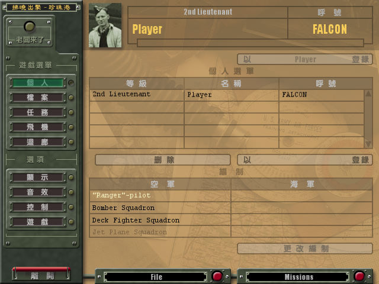
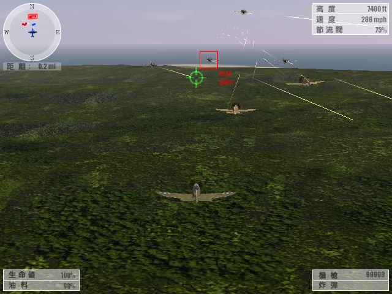

名稱：拂曉出擊：珍珠港／珍珠港：拂曉出擊／偷襲珍珠港之拂曉攻擊／出擊珍珠港 (Pearl Harbor: Strike at Dawn，繁中／簡中版) 簡介：MAUS 2001年出品的空戰射擊模擬遊戲，由Koch代理發行，台灣由名宇繁中化並代理發 行，大陸由世紀雷神簡中化並代理發行 [待補]。   保護：繁中版為SafeDisc 2.30，簡中版無保護 檔案：nocd_cht.rar = 繁中版免光碟檔

